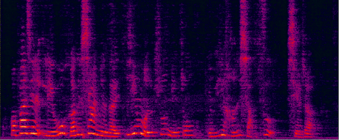
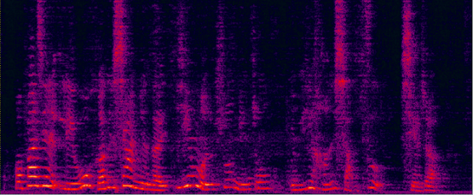
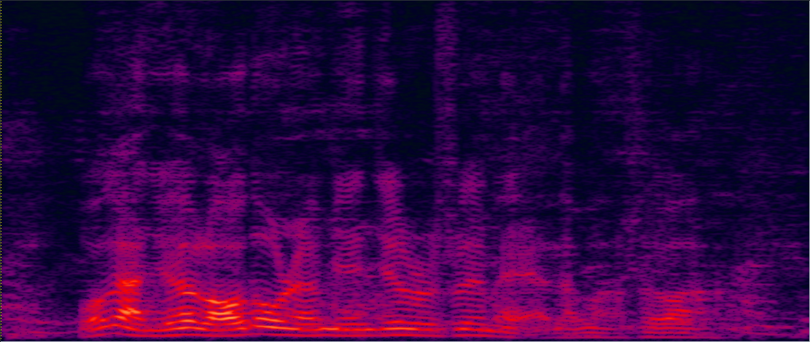
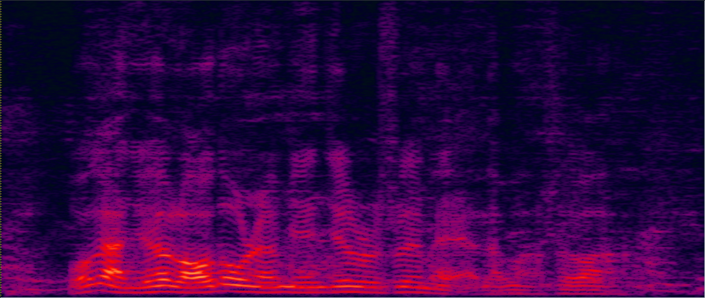
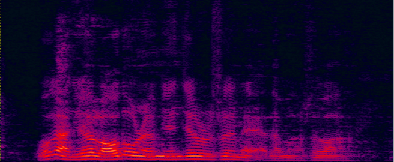

Accepted to Interspeech2021, *Yong XU (yong.xu.ustc@gmail.com), Zhuohuang Zhang, Meng Yu, Shi-Xiong Zhang, Dong Yu, Tencent AI lab, Bellevue, WA, USA
Although the conventional mask-based minimum variance distortionless response (MVDR) could reduce the non-linear distortion, the residual noise level of the MVDR separated speech is still high. In this paper, we propose a spatio-temporal recurrent neural network based beamformer (RNN-BF) for target speech separation. This new beamforming framework directly learns the beamforming weights from the estimated speech and noise spatial covariance matrices. Leveraging on the temporal modeling capability of RNNs, the RNN-BF could automatically accumulate the statistics of the speech and noise covariance matrices to learn the frame-level beamforming weights in a recursive way. An RNN-based generalized eigenvalue (RNN-GEV) beamformer and a more generalized RNN beamformer (GRNN-BF) are proposed. We further improve the RNN-GEV and the GRNN-BF by using layer normalization to replace the commonly used mask normalization on the covariance matrices. The proposed GRNN-BF obtains better performance against prior arts in terms of speech quality (PESQ), speech-to-noise ratio (SNR) and word error rate (WER).
Demo 1: (waveforms aligned with the spectrograms shown in Fig. 2 of the paper): [Sorry for that the demos below are all in Mandarin]:


| Mixture (2-SPK overlapped + non-stationary additive noise) wav | Conv-TasNet with STFT (has non-linear distortion) wav | MVDR [11] Jointly Trained (distortionless but with high residual noise level) wav | Multi-tap MVDR [11] Jointly trained (distortionless but still has some residual noise) wav |
 

| ADL-MVDR [10] (distortionless but still has some audible residual noise) wav | Proposed GRNN-BF (distortionless and nearly no residual noise) wav | Reverb Clean (Reference clean) wav |
Demo 2: Simulated 3-speakers overlapped mixture for target speech separation
 
 
| 3-speakers overlapped mixture wav | Conv-TasNet with STFT (has non-linear distortion) wav | MVDR [11] Jointly Trained (distortionless but with high residual noise level) wav | Multi-tap MVDR [11] Jointly trained (distortionless but still has some residual noise) wav |

| ADL-MVDR [10] (distortionless but still has some audible residual noise) wav | Proposed GRNN-BF (distortionless and nearly no residual noise) wav | Reverb Clean (Reference clean) wav |
Demo 3: Real-world far-field recording and testing:
15-element non-uniform linear microphone array and colocated 180 degree wide-angle camera for our real-world video and audio recording
For the real-world videos, as the 180-degree wide-angle camera is colocated with the linear mic array, the rough DOA of the target speaker could be estimated according to the location of the target speaker in the whole camera view [1]. Face detection and face tracking are conducted to track the target speaker's DOA. (Note that for the simulated data, the ground-truth target DOA is known.)
| Real-world far-field two-speaker mixture recorded by the hardware (camera and microphone array ) above | Real-world separated male speaker's speech by the Multi-tap MVDR [11] method (face detected and tracked in the red rectangle) | Real-world separated male speaker's speech by the ADL-MVDR [10] method (face detected and tracked in the red rectangle) | Real-world separated male speaker's speech by the proposed GRNN-BF method (face detected and tracked in the red rectangle) |
Demo 4: Real-world far-field recording and testing 2:
| Real-world far-field two-speaker mixture recorded by the hardware (camera and microphone array ) above | Real-world separated female speaker's speech by the multi-tap MVDR [11] method (face detected and tracked in the red rectangle). | Real-world separated female speaker's speech by the ADL-MVDR [10] method (face detected and tracked in the red rectangle). | Real-world separated female speaker's speech by the proposed GRNN-BF method (face detected and tracked in the red rectangle). |
Reference:
[1] Audio-Visual Speech Separation and Dereverberation with a Two-Stage Multimodal Network, Ke Tan, Yong XU, Shixiong Zhang, Meng Yu, Dong Yu, accepted to IEEE Journal of Selcted Topics in Signal Processing, 2020
[2] Multi-modal Multi-channel Target Speech Separation, Rongzhi Gu, Shi-Xiong Zhang, Yong Xu, Lianwu Chen, Yuexian Zou, Dong Yu, accepted to IEEE Journal of Selcted Topics in Signal Processing, 2020
[3] Time Domain Audio Visual Speech Separation, Jian Wu, Yong Xu, Shi-Xiong Zhang, Lian-Wu Chen, Meng Yu, Lei Xie, Dong Yu, ASRU2019
[4] A comprehensive study of speech separation: spectrogram vs waveform separation Fahimeh Bahmaninezhad, Jian Wu, Rongzhi Gu, Shi-Xiong Zhang, Yong Xu, Meng Yu, Dong Yu, Interspeech2019
[5] Du, Jun, Qing Wang, Tian Gao, Yong Xu, Li-Rong Dai, and Chin-Hui Lee. "Robust speech recognition with speech enhanced deep neural networks.". Interspeech2014
[6] Xu, Yong, Jun Du, Li-Rong Dai, and Chin-Hui Lee. "A regression approach to speech enhancement based on deep neural networks." IEEE/ACM Transactions on Audio, Speech, and Language Processing 23, no. 1 (2014): 7-19.
[7] Luo, Yi, and Nima Mesgarani. "Conv-tasnet: Surpassing ideal time–frequency magnitude masking for speech separation." IEEE/ACM transactions on audio, speech, and language processing 27.8 (2019): 1256-1266.
[8] Heymann, Jahn, Lukas Drude, and Reinhold Haeb-Umbach. "Neural network based spectral mask estimation for acoustic beamforming." 2016 IEEE International Conference on Acoustics, Speech and Signal Processing (ICASSP). IEEE, 2016.
[9] Benesty, Jacob, Jingdong Chen, and Emanuël AP Habets. Speech enhancement in the STFT domain. Springer Science & Business Media, 2011.
[10] Zhang, Zhuohuang, Yong Xu, Meng Yu, Shi-Xiong Zhang, Lianwu Chen, and Dong Yu. "ADL-MVDR: All deep learning MVDR beamformer for target speech separation." accepted to ICASSP2021.
[11] Xu, Yong, Meng Yu, Shi-Xiong Zhang, Lianwu Chen, Chao Weng, Jianming Liu, and Dong Yu. "Neural Spatio-Temporal Beamformer for Target Speech Separation." accepted to Interspeech2020.
[12] Xiao, Xiong, Chenglin Xu, Zhaofeng Zhang, Shengkui Zhao, Sining Sun, Shinji Watanabe, Longbiao Wang et al. "A study of learning based beamforming methods for speech recognition." In CHiME 2016 workshop, pp. 26-31. 2016.